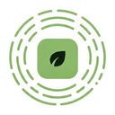

MY FARMPrivacy policy
Last updated: 10 October 2026
MY FARM helps farmers in Uganda find crop diseases from a photo and plan their season. This policy explains what the app collects, why, who it is shared with, and how to delete it. If you have questions, email myfarm.afrotym@gmail.com.
The short version
- Disease diagnosis happens on your phone. It works offline.
- You sign in with your email (or your phone number, if the app offers phone sign-in). We use it only to send your sign-in code and keep your records in your account.
- Your scans, photos and season plan are backed up to your account so you don't lose them if you change phones.
- Your location is only recorded if you agree, and only as your district and sub-county (GPS rounded to about 2 km).
- We do not sell your data or show adverts.
- You can delete your account and everything in it at any time, in the app or from this website.
What we collect
| Data | Why |
|---|---|
| Email address, or phone number if you sign in by phone | To send your 6-digit sign-in code and identify your account. |
| Your name (optional) | Shown in the app to greet you. You can leave it empty. |
| Crop photos you scan | Backed up to your account so you can see past scans on a new phone. |
| Scan results: crop, disease found, confidence, date and time | Your scan history, and counting which diseases are common in each area. |
| Season plan and the tasks you tick off | Backed up to your account. |
| Location, only if you choose to share it: district, sub-county, and GPS rounded to about 2 km | To show which diseases are common near you, and to warn other farmers in your area. You can choose your district by hand instead, or not share any location. |
| Language (English or Luganda) | To show the app and advice in your language. |
We do not collect your contacts, your exact location, other photos on your phone, or advertising identifiers. The app asks Android for approximate location only, and only after you choose “Use my location”.
How location and area statistics work
When you scan a crop, the app records the district (and sub-county if known) the scan was made in, following the choice you made. Other farmers see only totals: for example, “Cassava mosaic: 12 farmers in Mbale in the last 90 days”. A disease is only shown for an area once at least 3 different farmers have found it there, so no single farm can be picked out. Names, phone numbers, photos and exact positions are never shown to other farmers.
Who we share data with
We do not sell or rent your data. We use these service providers to run the app, and they may only use your data to provide their service to us:
- Supabase stores your account, scans, photos and plan (database and file storage).
- Google (Gmail), which sends our emails, receives your email address and sign-in code to deliver the email.
If the app offers sign-in by phone, Africa's Talking receives your phone number and sign-in code to deliver the SMS.
We may also share data if the law requires it.
How we keep it safe
- All data is sent over encrypted connections (HTTPS).
- Access rules in the database let each farmer read and change only their own records. Photos are stored privately, in a folder only your account can open.
- There are no passwords to steal: you sign in with a one-time code.
How long we keep it
- Your account and records: until you delete your account.
- If you sign in by phone, the record of sign-in SMS messages (phone number and time, used to stop misuse): 7 days.
- After you delete your account, copies in our provider's backups are removed within 30 days.
Your rights
Under Uganda's Data Protection and Privacy Act, 2019, you can ask to see the data we hold about you, ask us to correct it, and ask us to delete it.
- Correct: change your name and location choice in the app under Account.
- Delete: in the app, go to Account → Delete account. Or follow the steps on this page.
- See or ask anything else: email us at the address above. We reply within 30 days.
Signing out removes your records from the phone but keeps them in your account. Deleting your account removes them for good.
Children
MY FARM is made for farmers and is not directed at children under 13.
Changes
If we change this policy, we will update the date at the top. If the change is important, we will tell you in the app.